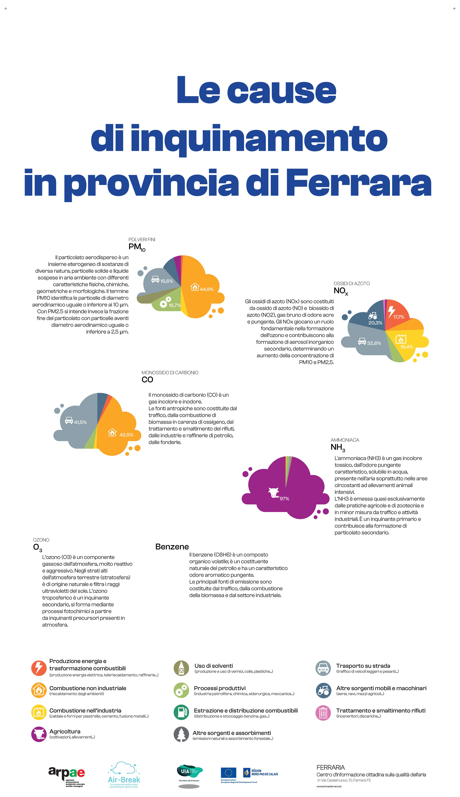
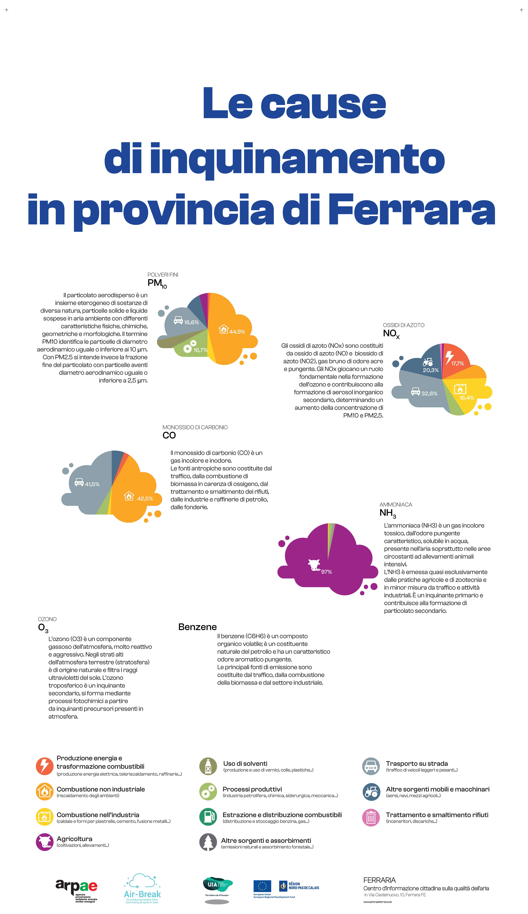

Qualità dell'aria
Per un problema multi-scala, monitoraggio multi-scala
La legislazione europea dice che in una città come Bologna bastano due o tre stazioni per la misura della qualità dell'aria.
Sono sufficienti per monitorare gli aspetti generali dell'inquinamento urbano, poi però esistono punti di accumulo locali (sotto i portici, nelle strade strette), differenze tra il primo e l'ultimo piano, emissioni locali (impianti), anche episodiche (cantieri, ingorghi, caminetti accesi), inquinamento dentro le case...
Non basterebbero centinaia di centraline per monitorare tutta questa varietà di situazioni, e i costi delle reti di misura sono già adesso difficili da sostenere.
L'Agenzia Ambientale Europea promuove l'integrazione di strumenti diversi: satelliti, modelli, poche stazioni con strumenti avanzati e reti di microsensori a basso costo gestite da volontari (scuole, associazioni, cittadini).
INQUINAMENTO DELL'ARIA - Cosa stiamo respirando
Video dei Cartoni Morti
Principali agenti indoor e potenziali fonti interne
Il Joint Research Centre (JCR) dell’UE ha condotto uno studio dal quale è emerso che negli spazi interni sono presenti maggiori quantità di sostanze nocive rispetto che all’aperto. Non sono rari i livelli di concentrazione che col tempo hanno degli effetti dannosi sulla salute.
FONTI |
INQUINANTI |
Processi di combustione a gas o carbone per riscaldare e/o cucinare, camini e stufe a legna, gas di scarico veicoli |
Prodotti di combustione (CO, NOx, SO2, particolato) |
Materiali da costruzione e isolanti |
amianto, fibre vetrose artificiali, Particolato, Radon; Agenti biologici (per presenza di umidità e/o polvere) |
Materiali di rivestimento e moquette |
formaldeide, acrilati, COV e Agenti biologici (per presenza di umidità e/o polvere) |
Arredi |
formaldeide, COV e Agenti biologici (per presenza di umidità e/o polvere) |
Liquidi e prodotti per la pulizia |
alcoli, fenoli, COV |
Fotocopiatrici |
ozono (O3), polvere di toner, idrocarburi volatili (COV) |
Fumo di sigaretta |
idrocarburi policiclici, COV formaldeide, CO, particolato fine |
Impianti di condizionamento |
CO2 e COV (per scarso numero di ricambi orari o eccesso di riciclo); Agenti biologici (per mancanza di pulizia/manutenzione) |
Polvere |
Agenti biologici (allergeni indoor: acari) |
Individui |
CO2 e Agenti biologici (batteri, virus ecc.) |
Animali |
Allergeni indoor (peli ecc) |
Sorgenti naturali (lave, tufi, graniti, ecc.) |
Radon |
Particelle di aerosol atmosferico
Conosciute anche come particolato atmosferico (PM), le particelle di aerosol consistono in una miscela complessa di particelle solide e goccioline liquide di sostanze organiche e inorganiche nell’aria.
I componenti principali del PM sono solfati, nitrati, ammoniaca, cloruro di sodio, carbone nero, polvere minerale e acqua.
Classificazione del Pmx: x sta per diametro della particella, che è uguale a o minore di x μm. PM2,5, per esempio, definisce particelle con diametri inferiori o uguali a 2,5 μm.

Rischi per la salute
Le particelle più dannose per la salute sono quelle con un diametro pari o inferiore a 10 μm, poiché tali piccole particelle possono penetrare nella barriera polmonare umana ed entrare nel sistema sanguigno.
«L’Organizzazione Mondiale della Sanità (OMS) ha designato il particolato atmosferico aerotrasportato come cancerogeno del Gruppo 1. Gli studi hanno dimostrato che non vi è alcun livello sicuro di esposizione al PM e con l’aumento di concentrazione di PM nell’aria il tasso di cancro aumenta in modo proporzionale». [res.mdpi.com]
Ecco quindi riassunti i limiti di legge italiani (in accoglimento della Direttiva Europea) su PM10 e PM2.5:
Valore massimo per la media annuale |
Valore massimo per la media giornaliera |
|
|---|---|---|
PM10 |
40 µg/mc |
50 µg/mc* |
PM2.5 |
25 µg/mc |
— |
(*) da non superare più di 35 volte all’anno
Ben diverse, però, sono le soglie di riferimento per quanto riguarda gli effetti che le polveri sottili possono avere sulla salute.
Mentre si parla di 25 µg/mc come limite annuale di PM2.5 per Italia ed Europa, l’OMS, Organizzazione Mondiale della Sanità, pone un valore limite di riferimento ben diverso relativamente ai possibili effetti sulla salute: solo 10 µg/mc. Questo dato non deve stupire perché recenti studi del Ministero della Sanità hanno rilevato che ogni aumento di 10 µg/mc di PM2.5 corrisponde ad un incremento della mortalità per tumore ai polmoni del 14%. Per quanto riguarda le PM10, il limite annuale previsto da Italia ed Europa è di 40 µg/mc, mentre l’OMS consiglia di non superare i 20 µg/mc, oltre il quale scatta il livello d’allerta.
La discrepanza tra questi dati è rilevante: le concentrazioni di polveri sottili e particolato fine da non oltrepassare per legge in Italia sono molto superiori, addirittura doppie, a quelle raccomandate dalla principale autorità mondiale in tema di salute.
Raccomandazioni OMS
Valore massimo per la media annuale |
Valore massimo per la media giornaliera |
|
|---|---|---|
PM10 |
20 µg/mc |
50 µg/mc* |
PM2.5 |
10 µg/mc |
25 µg/mc |
(*) massimo 3 giorni all’anno)
Indice di qualità dell’aria (IQA)
Negli Stati Uniti, l’agenzia per la protezione dell’ambiente (EPA) stabilisce gli standard per le concentrazioni accettabili di particolato atmosferico PM2,5 e PM10 attraverso lo standard nazionale di qualità dell’aria ambiente (NAAQS) per il particolato atmosferico.

https://www.gpo.gov/fdsys/pkg/FR-2013-01-15/pdf/2012-30946.pdf
Relazione tra numero di particelle e massa
Distribuzione tipica della dimensione delle particelle atmosferiche in aree urbane. (nero: concentrazione in massa, rosso: concentrazione in numero) (D'Anna, 2008).

Biossido di carbonio
La concentrazione media di CO2 nell’aria atmosferica al 2015 è di circa 719 mg/m3 (400,83 ppmv)
Di solito le concentrazioni di CO2 nell’aria indoor sono più elevate e dipendono dal numero e dalla presenza degli occupanti di un ambiente, che richiedono continuamente ossigeno e che producono CO2 come sottoprodotto del sistema respiratorio. Di conseguenza un sostanziale incremento di CO2 comporta una corrispondente diminuzione della concentrazione di ossigeno (O2) nell’aria stessa e quindi un rischio per la salute umana.
CO2, l’indicatore più importante per la qualità dell’aria
La maggior parte delle persone passa ogni giorno più di 20 ore all’interno di ambienti chiusi. La CO2 (anidride carbonica) presente nell’aria è l'indicatore più importante della qualità dell'aria.
Concentrazioni di C02 di riferimento
Uno studio di Pettenkofer (1858) ha comprovato che le persone che si trovano in stanze con una concentrazione di CO2 al di sotto dello 0,1% (1.000 ppm) si sentono a loro agio, mentre si sentono chiaramente a disagio in stanze con concentrazioni al di sopra dello 0,2% (2.000 ppm).
In Germania viene fissato come valore limite per gli spazi abitativi lo 0,15% (1.500 ppm) di CO2. Se si vuole fare un confronto, si consideri che in una camera da letto non ventilata oppure anche in una classe piena possono essere misurati dei valori di concentrazione che sono spesso il triplo (fino a 5.000 ppm).
Per mantenere la concentrazione di CO2 al massimo allo 0,15% (1.500 ppm) devono essere immessi mediamente 25 m³/h di aria nuova per persona (se si sta per esempio praticando uno sport anche di più).
https://www.iss.it/documents/20126/45616/16_15_web.pdf

Un’elevata concentrazione di CO2 provoca il calo della concentrazione e sonnolenza.
Co-creare un futuro più salutare
 



L’aria che respiriamo contiene sostanze che possono impattare o meno la nostra salute a seconda della loro concentrazione. Spesso, si pensa che la colpa sia di un attore solo, oppure si pensa che la sfida sia troppo complessa per essere risolta, sopratutto da un singolo cittadino. Invece, qualcosa possiamo fare. Vi offriamo qui l’accesso a diverse carte interattive per acquisire importanti informazioni sul comportamento della città di Ferrara, in modo da diventare più consapevoli dei dati disponibili, e usarli al meglio per co-creare un futuro più salutare.
La Mobilità ad Alta Emissione Il settore dei trasporti è attualmente responsabile del 30% del totale nazionale delle emissioni di gas serra (circa 104 Mton CO2 eq nel 2018). Considerando la distribuzione delle emissioni per modalità di trasporto, quasi il 95% è dovuto al trasporto su strada, con un peso delle automobili pari a circa il 70%, seguito da camion e veicoli commerciali leggeri (insieme circa il 25%).
Fonte: MiTe: “Strategia Italiana di lungo termine sulla riduzione delle emissioni dei gas a effetto serra”, Gennaio 2021
L’agenzia europea dell’ambiente conferma: i trasporti continuano a costituire una fonte significativa di inquinamento atmosferico, soprattutto nelle città. Gli inquinanti atmosferici, come il particolato (PM2,5 e PM10) e il biossido di azoto (NO2), hanno un impatto significativo sulla salute umana e l’ambiente. Nonostante l’inquinamento atmosferico dovuto ai trasporti sia diminuito grazie all’introduzione di norme di qualità per i carburanti, alle norme EURO sulle emissioni dei veicoli e all’uso di tecnologie più pulite, le concentrazioni d’inquinanti atmosferici sono ancora troppo elevate. Le città italiane, inclusa Ferrara, stanno testando nuove alternative di mobilità per ridurre le emissioni. Avrete di certo incontrato le soluzioni della mobilità elettrica, dai veicoli ai monopattini e le bici. Diversi studi e ricerche stanno contribuendo all’elaborazione di un quadro conoscitivo sull’impatto di queste alternative che sembrano ancora lontane dall’obiettivo di azzerare le emissioni. Per approfondimenti, consultare “Micromobilità con monopattini elettrici”
Infine, oltre all’inquinamento, occorre considerare che automobili e altri veicoli a motore sono responsabili della quasi totalità degli incidenti stradali: dal 2004, ogni anno si sono registrati in media oltre 700 incidenti, con 900 feriti e 14 vittime (Fonte: Comune di Ferrara, Sistema Informativo Territoriale e Contatore degli incidenti stradali).
Inquinamento e Riscaldamento domestico
Più del 40% del PM10 primario è emesso dagli impianti domestici a biomassa in Emilia Romagna. Le regole sulle biomasse sono solo una delle 94 azioni del Piano Aria Integrato Regionale, che agisce sulle altre fonti di inquinamento atmosferico. Fonte: l’inventario regionale delle emissioni in atmosfera, realizzato mediante il software INEMAR (INventario EMissioni ARia) (2017), fonte: ARPAE
Che fare?
Ci serve ridurre i consumi energetici legati al riscaldamente e al raffrescamento ottimizando l’efficienza energetica delle nostre abitazioni e abandonare gli impianti termici a biomasssa. Diverse misure strutturali come il “Bonus 110%” sono oggi disponibili e favoriscono la transizione progressiva verso un parco residenziale a basse emissioni e l’adozione di sistemi più efficienti alimentati da fonti rinnovabili (es. pompe di calore elettriche). La Regione Emilia-Romagna si propone di contribuire al miglioramento della qualità dell’aria e all’incremento dell’efficienza energetica attraverso la sostituzione dei generatori di calore alimentati a biomassa legnosa. Consulta il sito di ARPAE per più informazioni .https://www.arpae.it/it/temi-ambientali/aria/liberiamo-laria/impianti-a-biomassa
Vuoi capire come i dati ti possono servire per migliorare la situazione? Abbiamo sviluppato diverse attività per : capire cosa raccontano i dati a scala locale, distinguere le relazioni causa-effetto, e identificare le opportunità di azione. In questa missione riconosciamo una ampia geografia della responsabilità.